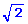

Un rayo de luz monocromática incide con un ángulo de 30º en una lámina de vidrio, de caras planas y paralelas. La lámina de vidrio, situada en el aire, tiene un espesor de 5 cm y un índice de refracción de 1.5. Se pide:
a) Ángulo con que emerge el rayo de la lámina
b) Longitud recorrida por el rayo en el interior de la lámina y desplazamiento paralelo del rayo
Un rayo de luz incide sobre una lamina plana de vidrio de 5 cm de espesor. El ángulo de incidencia sobre la lámina es tal que el rayo reflejado sobre la misma es perpendicular al rayo refractado. Si el índice de refracción es n = 1.5, calcula el ángulo con que emerge el rayo de la lámina de vidrio
 |
Un haz de luz blanca incide sobre una lámina de vidrio de grosor d, con un ángulo i = 60º a) Dibuja esquemáticamente las trayectorias de los rayos rojo y violeta b) Determina la altura respecto al punto O', del punto por el que la luz roja emerge de la lámina siendo d = 1 cm c) Calcula qué grosor debe tener
la lámina para que los puntos de salida de la luz roja y
de la luz violeta estén separados 1 cm |
Se tiene un prisma óptico (n = 1.62) cuyo ángulo de refringencia es de 30º. Un rayo de luz incide perpendicularmente en una de sus caras, calcula:
a) El ángulo con que emerge el rayo del prisma
b ) La desviación del rayo
Sea un prisma óptico de ángulo 28º. Se observa que al incidir sobre él un rayo de luz con ángulo de 30º, el ángulo de desviación es de 18º. Calcula el índice de refracción del prisma
Un prisma de 60º tiene un índice de refracción de 1.52. Calcula el ángulo de incidencia del rayo que penetrando por una cara sufre reflexión total en la cara opuesta
Sea un prisma óptico de ángulo 28º. Se observa que al incidir sobre él un rayo de luz con ángulo de 30º, el ángulo de desviación es de 18º. Calcula el índice de refracción del prisma
|
Dibuja la trayectoria del
rayo de luz en el prisma sabiendo que su índice  |

Un prisma cuyos ángulos son: 45º,45º, 90º está sumergido en agua (n = 4/3). ¿Cuál es el mínimo índice que puede tener el prisma para que se refleje totalmente un rayo que incide normalmente sobre una de sus caras pequeñas?
 |
La figura muestra dos rayos luminosos que llegan paralelos y simétricos a un prisma cuyo índice de refracción vale 1.4. Determina el ángulo que forman entre sí los rayos emergentes |
Determinad el desplazamiento paralelo de un rayo de luz al atravesar una lamina plana de caras paralelas de espesor 1 cm, cuyo índice de refracción es 1.5, para un ángulo de incidencia de 60º
Determina el índice de refracción de un prisma cuyo ángulo de refringencia es de 37º, sabiendo que un rayo que incide normalmente en una cara emerge del prisma con un ángulo de 65º
 |
Un prisma de sección
recta triangular, de ángulos 60º, 30º y 90º
se encuentra en el vacío. Sobre una de sus caras incide un
rayo de luz con ángulo de 15º, tal como indica la figura. |